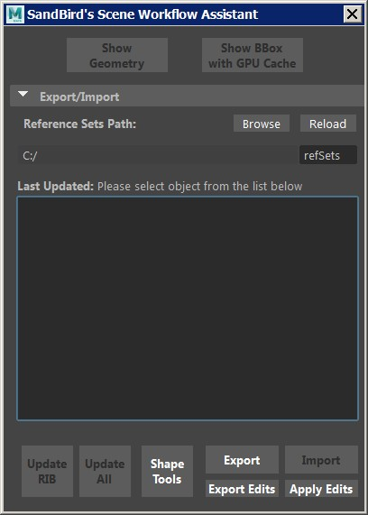

Scene Workflow Assistant |
|
VERSION 1.2.4 |
•Add indication (bold font) in the list if a reference exists in the file |
VERSION 1.2.3 |
•Updated the Shape Tools button to Objects/Shapes Toolbox •Added Source file open in current Maya instance •When exporting, User Attributes changed to selected by default |
VERSION 1.2.2 |
•Add a command to load the gpuCache, Alembic plugins prior to exporting to the related files |
VERSION 1.2.1 |
•Add a command to load the Rman plugin prior to exporting to RIB |
VERSION 1.2 |
•Added the option to open the source file of the references in a new Maya instance (this will only be available for refSets that were saved from this version onward) •Now the full path of the source file is saved to the .refSet file |
VERSION 1.1.1 |
•Fixed overlapping layout dialogs error (who knew...) when exporting refset with the save edits option selected •Fixed error with missing light prompt, for real this time :p •Changed it to be a toolbox window |
VERSION 1.1 |
•Fixed a crash render error when both the proxy and the gpu cache were selected to render •Added options to select what edits to save/import •Fixed position offset when rendering the RIB •Ref-set has now the proxy ref locked so not to move it by mistake •Added error report after applying edits •Fixed error with missing light prompt |
VERSION 1.0.2 |
•Added Shape Tools button |
VERSION 1.0.1 |
•Added Shape Tools button |
VERSION 1.0 |
•A tool that helps exporting and importing as well as updating objects as reference for faster scene management/movement as well as rendering.  |
Ethan's RFM Enhancement Pack is a property of Ethan Phoenix.
All Rights Reserved © Ethan Phoenix. For personal use only. Commercial use is prohibited. Not for redistribution without permission.